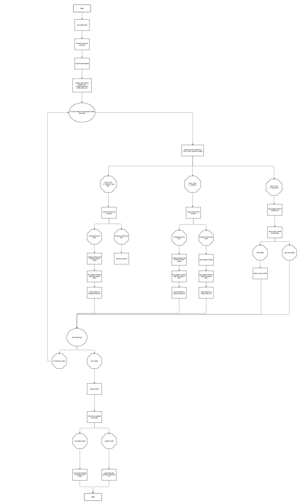

Project Overview
This project showcases my ability to automate large-scale data synchronization tasks between two critical systems: the Emergency Notification System (ENS) and the Company Asset Management System (CAMS). The goal was to ensure data consistency, eliminate manual intervention, and improve overall system reliability. The automation handles tasks such as data fetching, comparison, updating, and reporting with detailed error handling.
Key Features
- Automation with Selenium: Designed scripts to interact with the ENS interface for retrieving, updating, and managing data.
- Data Reconciliation: Compared datasets from CAMS and ENS to identify discrepancies, using pandas for efficient data manipulation.
- Dynamic Reporting: Generated detailed reports of updates, discrepancies, and records flagged for manual review, shared via automated emails.
- Error Handling: Implemented robust mechanisms to log and recover from failures during web interactions or data processing.
Technical Implementation
Python
Selenium
Pandas
Automated Email
Data Analysis
- Driver Initialization and Login: Used Selenium WebDriver to automate the login process for ENS with secure error handling.
- Data Processing: Collected and filtered data from ENS and CAMS using pandas. Identified unique records and performed in-depth comparisons between datasets to find mismatches.
- ENS Updates: Automated updates to ENS records to match CAMS data, including additions, modifications, and deletions.
- Reporting and Communication: Created CSV reports highlighting changes made, discrepancies found, and records requiring manual intervention. Sent reports automatically via email for stakeholder review.
Update Workflows
Monthly Update Process

Comprehensive reconciliation of all ENS data against CAMS to ensure full alignment
Daily Update Process

Incremental updates to reflect daily changes in CAMS, ensuring ENS remains up-to-date
Impact
- Reduced manual errors and inconsistencies by automating data synchronization
- Improved system reliability and ensured stakeholders were informed about changes through detailed reports
- Efficiently handled large datasets with optimized pandas operations